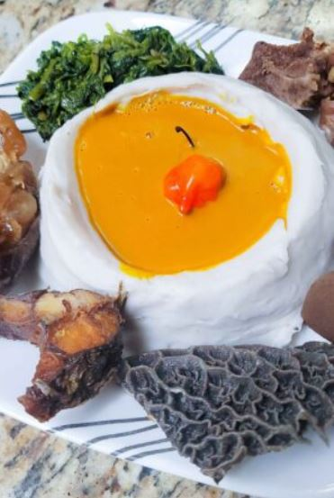

Not just the best in the BAMENDA.
The best in the world.

1. Achu and Yellow Soup – Pounded cocoyam served with a spicy yellow soup made from red oil, limestone (kanwa), and traditional spices, often eaten with beef or cow skin (kpomo). Corn Fufu and Njama Njama – Cornmeal paste eaten with sautéed huckleberry leaves, often accompanied by canda (cow skin), meat, or fish. 3. Koki Corn – Ground corn mixed with red oil, wrapped in banana leaves and steamed. It’s different from koki beans. 4. Kati Kati – Grilled chicken cooked in palm oil and spices, usually eaten with huckleberry (njama njama) and corn fufu. 5. Ndole – Though more common in Littoral, it’s also enjoyed in Bamenda. Made from bitterleaf and groundnut paste, served with plantains or rice. 6. Mbuh Corn (Porridge Corn) – Corn cooked with beans or vegetables like pumpkin leaves or huckleberry.Bamenda food is
a true delight, full
of rich flavors and
cultural pride.
From the spicy Achu soup
to the tasty Egusi
pudding and the fresh Njama Njama with
fufu corn, every bite
brings satisfaction.
These meals are not just
delicious, they’re
also healthy and made
with love—just like in the
village. Once you taste Bamenda cuisine,
you'll always crave more!